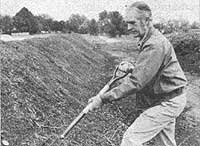
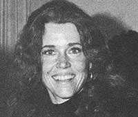

For 35 years-ever since the late Reverend Edward J. Flanagan (Father Flanagan) hired him to take charge of Boys Town's 900-acre farm in 1943-Bob Steffen managed one of the largest "organic" gardens in the country. Late last year, however, the soft-spoken agronomist was dismissed from his post at the home . . . and Boys Town officials have announced that-starting this spring-they'll abandon Steffen's wholistic farming methods in favor of "conventional" growing techniques.
According to Administration Director Ed Hewitt, Boys Town looks "messy" with all those piles of ripening compost around . . . "chemicals are more efficient . . . the farm has been costly to us . . . we've got to get better production and a better return . . . we can't afford an experiment on this scale".
Bob Steffen-who studied at the Biodynamic Farming and Gardening School in Kimberton, Pennsylvania before starting his life's work-sees the questions of "efficiency" and "return on investment" in, perhaps, somewhat less narrow terms. "I was determined to adhere to the principles of organic farming when I took the Boys Town job," he says, "and over the years I introduced a lot of the home's residents to those principles. I like to think that a number of the boys were helped by that, even though we were trying to teach in two to three years what a normal farm boy learns in 10 to 15. The idea was to get the boy to realize his own worth, to help himself, and to gain an appreciation of the balance of nature."
Bob and his wife have now retired to an 80-acre homestead in Bennington, Nebraska . . . where they're working to establish a garden and orchard and with the help of a book by Helen and Scott Nearing-to convert a hog house into a greenhouse. As might be expected, Steffen is "disappointed, of course" about the fate of the Boys Town farm, but he tries not to think about it.
"I made it a point to teach the youngsters production instead of consumption," Bob says. "But they're teaching them how to be smart consumers now."- Adapted from an article by Dave Sink in the West Omaha Sun.
Jane Fonda's on the march again! Only this time the famous actress and political activist-a prominent figure in the anti-war movement of the sixties-is marching to promote the use of solar energy.
Her particular "cause" is SolarCal, a proposed California state authority whose goal would be "to solarize all feasible buildings in the state by 1990".
Such a cabinet-level solar agency, Jane declares, would counter inflation, curb pollution, and decrease dependence on nonrenewable energy resources.
Ms. Fonda-along with her husband and fellow activist Tom Hayden-is swinging through the nation's most populous state on behalf of the Campaign for Economic Democracy (CED). As she stumps, she tells listeners that a pro-SolarCal bill soon to go before the state legislature has the backing not only of environmentalists and many small solar entrepreneurs but of labor as well. This, she says, is because "it's the most job-intensive measure ever considered in California".
According to Jane, SolarCal would initially be financed with a $10 million appropriation from the state general fund, would later be supported by general obligation bonds and the like, and would eventually be self-sustaining.
It would provide low-interest loans to consumers and small solar businesses, would establish standards, and would perpetuate research and development . . . especially in the promising area of solar-generated electricity. And the greatest boon of all, she emphasizes again, would be SolarCal's beneficial effect on employment.
The unconventional movie star plans to "saturate" the state with other CED promoters during 1978 in order to present the facts of SolarCal to the people. "It's a winning issue," says Jane, who clearly still relishes the role of activist.- Barbara Carpenter.
Part of the small but growing new wave of activists in American politics is Carol Tucker Foreman, Assistant Secretary for Food and Consumer Services at the Department of Agriculture.
Carol came to her government post from a job at the Consumer Federation of America, where she first began to learn that there are effective ways to change The System by working within that system.
Since her appointment, Carol has been responsible for many significant events in American nutrition and health . . . milestones such as the investigation of possibly carcinogenic nitrates and nitrites in meat preservatives, a review of the practice of using ground bone in meat fillers, and the cancellation of "fortified Twinkies" as an allowable food in the national school lunch program.
Among the energetic official's ongoing concerns are such projects as the improvement of the quality of food delivery systems, the expansion of participation in the school breakfast program, the initiation of regulations on net weight labeling and for competitive foods, and the implementation of food stamp regulations.
Carol means business about improving the quality of American foods, and she's eager for increased public comment on proposed legislation: "Industry representatives still far outweigh the consumer advocates," she says.
Anyone who wishes information or wants to express his or her views about some aspect of or legislative issue Involving the country's commercial or institutional food practices should write to: Carol Foreman, Assistant Secretary for Food and Consumer Services, Department of Agriculture, Washington, D.C. 20250.-SN.
Are you up on the latest doings of someone (such as any of those innovative pioneers featured in MOTHER's Plowboy Interviews) who's achieved recognition in afield regularly covered by this magazine? If so, send us a tightly written 200-word report on that person (along with a clear, snappy black-and-white photograph), and-providing your report is used in NEWSWORTHIES-we'll gladly send you a flat 850 ($25 without that photograph). Send your contributions to NEWSWORTHIES EDITOR., THE Mother Earth News (restricted) ,P.O. Box 70, Hendersonville, N.C. 9,8739.
|
 |
 |
|